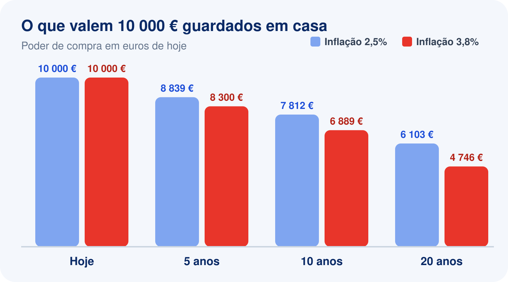
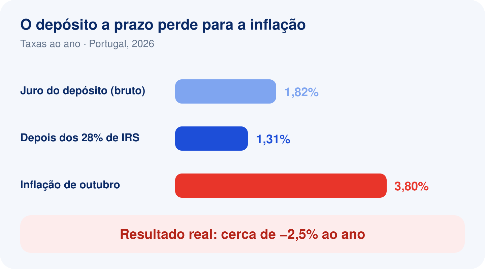
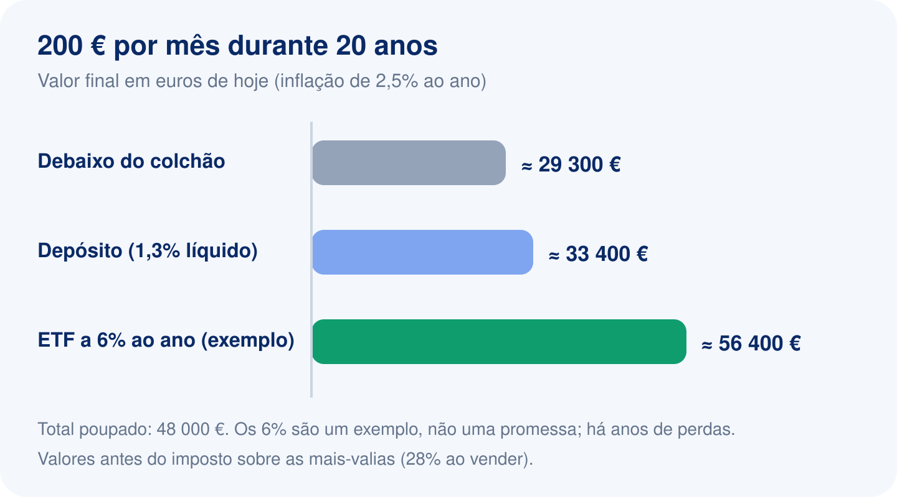

A inflação está a comer as suas poupanças: porque investir (e como começar sem correr riscos desnecessários)
Em outubro, os preços em Portugal subiram 3,8% face ao ano anterior, segundo a estimativa do INE, a subida mais forte em mais de três anos. No mesmo período, um depósito a prazo novo rendia, em média, menos de 2% antes de impostos. Faça as contas: quem deixa o dinheiro parado, ou mesmo num depósito, está a ficar mais pobre todos os meses, sem dar por isso.
Este guia explica, com números simples, o que a inflação faz às suas poupanças, porque investir é a defesa mais eficaz a longo prazo e, sobretudo, como começar sem correr riscos desnecessários.
O maior gatilho para iniciar a minha jornada na bolsa foi perceber que deixar o dinheiro parado é uma das piores coisas que se pode fazer: a inflação corrói-o mais depressa do que uma traça num guarda-roupa.
Comecei com pouco, mas com uma certeza: O meu dinheiro tinha de trabalhar para mim, e não encolher na conta.
O que a inflação faz ao seu dinheiro
Inflação é a subida geral dos preços. Quando a inflação é de 3%, aquilo que hoje custa 100 € passa a custar 103 € daqui a um ano. As notas na sua carteira continuam a dizer "100 €", mas compram menos.
O problema é que este efeito se acumula, ano após ano. Veja quanto valem 10.000 € guardados em casa, em "euros de hoje", ao fim de alguns anos:

| Anos | Inflação de 2,5% ao ano | Inflação de 3,8% ao ano |
|---|---|---|
| 5 anos | 8.839 € | 8.300 € |
| 10 anos | 7.812 € | 6.889 € |
| 20 anos | 6.103 € | 4.746 € |
Com uma inflação de 3,8%, em 20 anos as suas poupanças perdem mais de metade do poder de compra. Não desapareceu um único euro da conta, mas o que esse dinheiro compra encolheu para menos de metade.
Uma regra simples para fazer de cabeça: divida 72 pela taxa de inflação e fica a saber em quantos anos o poder de compra do seu dinheiro cai para metade. Com 3% de inflação, 72 ÷ 3 = 24 anos. Com 4%, apenas 18.
"Mas eu tenho o dinheiro num depósito a prazo"
É melhor do que nada, mas em Portugal, nos últimos anos, também não chega. Em setembro de 2026, a taxa média dos novos depósitos a prazo de particulares foi de 1,82%, abaixo da média da zona euro. E sobre esses juros ainda paga 28% de IRS.

| Taxa ao ano | |
|---|---|
| Juro médio de um depósito novo (bruto) | 1,82% |
| Juro depois dos 28% de imposto | cerca de 1,31% |
| Inflação de outubro | 3,8% |
| Resultado real | cerca de −2,5% ao ano |
E repare: 1,82% é a média dos depósitos novos. A maior parte do dinheiro dos portugueses está em depósitos antigos ou à ordem, que rendem ainda menos. O próprio Banco de Portugal reconhece que, nos últimos cinco anos, os juros dos depósitos não acompanharam a subida dos preços, o que se traduziu numa perda de poder de compra para as famílias.
Conclusão: o depósito protege o dinheiro de sustos, mas não o protege da inflação.
Porque investir protege o seu dinheiro
Quando compra uma ação, ou um ETF que junta centenas ou milhares de ações, torna-se dono de uma pequena parte de empresas reais. E as empresas têm uma vantagem que o dinheiro parado não tem: quando os preços sobem, elas também sobem os preços do que vendem. Com o tempo, os lucros e o valor das empresas tendem a acompanhar e a ultrapassar a inflação.
Historicamente, as ações globais foram dos poucos investimentos acessíveis que conseguiram, em períodos longos, render acima da inflação. A palavra importante é "longos": em períodos curtos, as ações podem cair muito, e caem.
Veja a diferença ao longo de 20 anos, para quem põe de lado 200 € por mês (4.800 € investidos no total ao fim de 20 anos são 48.000 €):

| Onde fica o dinheiro | Valor ao fim de 20 anos | Em euros de hoje (inflação de 2,5%) |
|---|---|---|
| Debaixo do colchão (0%) | 48.000 € | cerca de 29.300 € |
| Depósito a 1,3% líquido | cerca de 54.800 € | cerca de 33.400 € |
| Carteira de ETF a 6% ao ano (exemplo) | cerca de 92.400 € | cerca de 56.400 € |
Os 6% ao ano são apenas um exemplo para mostrar o efeito, não uma promessa: há anos de perdas e o resultado futuro é sempre incerto. Os valores também não incluem os impostos sobre as mais-valias (28% quando vender). Mas a diferença mostra o que está em jogo: no colchão, o esforço de 20 anos perde quase 40% do valor; investido, pode crescer.
Antes de investir: a ordem certa
Investir não é para todo o dinheiro, nem para qualquer altura. A ordem que recomendamos é esta:
- Pague as dívidas caras primeiro. Um cartão de crédito a 15% ou 20% ao ano custa mais do que qualquer investimento consegue render.
- Construa um fundo de emergência. Entre 3 e 6 meses das suas despesas, num depósito ou em Certificados de Aforro, sempre disponível. Se o seu rendimento é variável, aponte para os 6 meses. É este dinheiro que evita ter de vender os investimentos na pior altura.
- Só depois, invista o que não vai precisar nos próximos 5 anos ou mais. Dinheiro para a entrada da casa daqui a dois anos não deve estar em ações.
Como começar sem complicar
- Prefira ETF diversificados. Um ETF do mercado mundial reparte o seu dinheiro por milhares de empresas de dezenas de países, com custos anuais muito baixos. É a forma mais simples de não depender da sorte de uma só empresa.
- Invista todos os meses, sempre no mesmo dia. Não tente adivinhar o melhor momento: ninguém consegue de forma consistente. Investir regularmente faz com que compre mais quando os preços estão baixos e menos quando estão altos.
- Comece com o que pode. 25 € ou 50 € por mês fazem diferença ao fim de anos e, mais importante, criam o hábito. Quando o rendimento subir, sobe também a percentagem que investe.
- Pense nos impostos desde o início. Em Portugal, as mais-valias e os dividendos pagam 28%. Um ETF de acumulação, que reinveste os dividendos em vez de os pagar, adia o imposto até ao dia em que vender. Lembre-se também de que vai ter de declarar tudo no IRS: guarde os extratos da corretora.
- Olhe para a carteira pouco. Uma vez por mês chega. Ver a carteira cair num dia mau é a maior tentação para vender no pior momento.
Os riscos, sem rodeios
- As ações podem cair 30% ou mais, e às vezes demoram anos a recuperar. Só deve investir em ações o dinheiro que consegue deixar quieto durante uma descida dessas.
- Em períodos curtos, os investimentos podem perder para a inflação, e até ter perdas.
- Não há garantias. Os resultados passados não garantem os futuros, e qualquer número sobre rentabilidades futuras é uma estimativa.
- A diversificação reduz o risco, mas não o elimina.
O objetivo não é ficar rico depressa. É fazer com que o dinheiro que custou a ganhar mantenha, e de preferência aumente, o seu valor ao longo do tempo.
Em resumo
- Com a inflação acima dos juros dos depósitos, o dinheiro parado perde poder de compra todos os meses.
- Primeiro, as dívidas caras e o fundo de emergência; depois, investir o que não precisa nos próximos anos.
- ETF diversificados, aportes regulares e paciência são o caminho mais simples para a maioria das pessoas.
- Investir tem riscos reais: invista só o que consegue deixar quieto, mesmo quando o mercado cai.
Quer ver se a sua carteira está a ganhar à inflação? A app AllFolio, gratuita, compara o resultado dos seus investimentos com a inflação em Portugal desde a data de cada compra.
Fontes
- INE, Índice de Preços no Consumidor, estimativa rápida de outubro de 2026.
- Banco de Portugal, taxas de juro de novos depósitos a prazo de particulares (setembro de 2026) e estudo sobre a remuneração dos depósitos em Portugal (agosto de 2026).
Este artigo é informação geral e não constitui aconselhamento de investimento. Cada situação é diferente: em caso de dúvida, fale com um profissional certificado.
Faça as contas do IRS em poucos minutos
Importe o extrato da XTB, DEGIRO, Trading 212 ou Revolut e o AllFolio aplica o FIFO, converte o câmbio e prepara as tabelas dos Anexos G e J. Gratuito.
Experimentar o AllFolio grátisEste guia é informação geral e foi atualizado em 7 de novembro de 2026. Não substitui o aconselhamento de um contabilista certificado nem as instruções oficiais da Autoridade Tributária, que podem mudar de ano para ano.